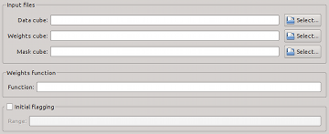

Here, the input data files and settings can be specified.
| Module / Parameter | Type | Values | Description |
|---|---|---|---|
| import.inFile | string | file name | Name of input data file. This option is mandatory, and there is no default. Note that only FITS files are currently supported. |
| import.weightsFile | string | file name | Name of optional file containing weights of pixels in the input cube. The weights will be applied before running the source finder. The default is to not apply weights. |
| import.maskFile | string | file name | Name of optional file containing a mask of pixels identified as part of a source, e.g. from a previous run of SoFiA. This can be used to re-parametrise sources without repeating the source finding step. The default is to not read a mask cube. |
| Module / Parameter | Type | Values | Description |
|---|---|---|---|
| import.weightsFunction | string | analytic function | Analytic function used to describe the data weights as a function of x, y, and z. The default is to not apply weights. The following numpy functions are supported: sin(), cos(), tan(), arcsin(), arccos(), arctan(), arctan2(), sinh(), cosh(), tanh(), arcsinh(), arccosh(), arctanh(), exp(), log(), log10(), log2(), sqrt(), square(), power(), absolute(), fabs(), and sign(). Note that the weights function is not applied whenever a weights cube is specified (see import.weightsFile). |
| Module / Parameter | Type | Values | Description |
|---|---|---|---|
| steps.doFlag | bool | true, false | Flag certain pixel and channel ranges before proceeding. |
| flag.regions | string | range(s) to be flagged | Pixel/channel range(s) to be flagged prior to source finding. Format: [[x1, x2, y1, y2, z1, z2], ...]. A place holder, '' (two single quotes), can be used for the upper range limit (x2, y2, and z2) to flag all the way to the end, e.g. [0, '', 0, '', 0, 19] will flag the first 20 channels of the entire cube. The default is to not flag anything. |